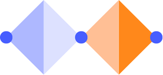

This project focuses on designing a technological system that solves a real-world problem. Extensive research was conducted to ensure the solution is both effective and innovative. The final design aims to address key challenges in the chosen domain while being user-friendly and impactful.
The design process followed the Double Diamond framework, which consists of four key phases: Discover, Define, Develop, and Deliver. This approach ensures a thorough understanding of the problem and a structured path toward an optimal solution.
The "Discover" phase involved extensive user research and problem exploration. During "Define," insights were synthesized to pinpoint the core problem. In "Develop," ideas were brainstormed and prototyped. Finally, in "Deliver," the solution was refined and implemented.
If you'd like to learn more about my Master Project or discuss potential collaborations, feel free to reach out via email at youremail@example.com.